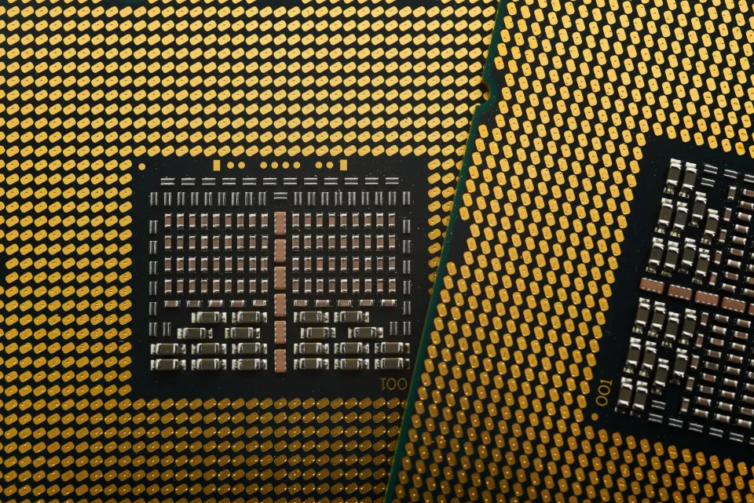

코스피 장중 7100선 돌파…반도체 랠리에 외국인 순매수
18일 코스피가 개장 직후 2%대 상승하며 7100선을 넘어섰다. 한국거래소에 따르면 이날 코스피는 전 거래일보다 149.83포인트(2.15%) 오른 7127.77에 출발했으며, 장 초반 상승 폭을 더 키워 7100선 위에서 거래를 이어갔다. 유가증권시장에서는 외국인이 강한 매수세를 보이며 지수 상승을 주도했고, 개인과 기관은 각각 순매도로 대응하며 차익 실현에 나선 것으로 나타났다. 코스피가 장중 7100선을 넘어선 것은 국내 증시 역사상 이례적인 수준으로, 최근 이어진 반도체 랠리가 지수 전반의 체력을 끌어올리고 있다는 평가가 나온다.
이날 상승세를 이끈 것은 단연 반도체 대형주였다. 삼성전자는 전 거래일보다 8000원가량 오른 28만원대 초반에서 거래되며 강세를 이어갔고, SK하이닉스도 9만원 넘게 뛰며 174만원대에 진입했다. SK스퀘어 역시 4% 넘게 상승하는 등 반도체 밸류체인 전반에 매수세가 몰렸다. 증권가에서는 인공지능 인프라 투자 확대에 따른 고대역폭메모리(HBM) 수요 증가가 반도체주 강세의 배경으로 꼽힌다고 설명했다. 반도체 관련 소재·부품·장비 종목까지 동반 강세를 보이면서 관련 업종 전반에 훈풍이 이어지는 모습이다.

업계에서는 최근 반도체 업황을 두고 과거 통상적인 재고 조정 주기와는 다른 새로운 수요 사이클이 시작됐다는 분석이 나온다. 데이터센터 투자 확대와 자체 개발 인공지능 칩 수요 증가로 고성능 메모리 반도체에 대한 수요가 빠르게 늘고 있지만, 공급이 이를 충분히 따라가지 못하면서 가격 상승이 이어지고 있다는 것이다. 이 같은 수급 불균형이 삼성전자와 SK하이닉스 등 국내 메모리 업체들의 실적 기대감을 끌어올리고 있다는 평가다. 자율주행과 휴머노이드 로봇 등 응용 분야가 넓어지면서 고성능 메모리 수요가 당분간 꾸준히 이어질 것이라는 전망도 나온다.

코스닥 시장도 이날 동반 강세를 나타냈다. 반도체 소재·부품·장비주를 중심으로 매수세가 유입되며 코스닥지수 역시 상승 출발했다. 다만 증권가에서는 최근 지수가 단기간에 가파르게 오른 만큼 밸류에이션 부담과 차익 실현 물량에 유의할 필요가 있다는 신중론도 함께 제기되고 있다. 외국인 수급이 지속될지 여부가 향후 지수 흐름을 좌우할 핵심 변수로 꼽히는 가운데, 시장에서는 다음 달 예정된 주요 반도체 기업들의 실적 발표에도 관심이 쏠리고 있다.
환율은 코스피 강세와 맞물려 비교적 안정적인 흐름을 보였다. 시장 참여자들은 미국 연방준비제도의 통화정책 방향과 글로벌 반도체 업황 지표를 주요 변수로 주시하고 있다고 전했다. 증권업계 관계자는 "반도체 슈퍼사이클에 대한 기대가 지수를 끌어올리고 있지만, 실적 발표 시즌과 대외 변수에 따라 변동성이 커질 수 있다"며 신중한 접근이 필요하다고 조언했다. 일각에서는 단기 과열 신호가 감지되는 만큼 분할 매수 등 리스크 관리 전략이 필요하다는 조언도 나온다.
한편 이날 시가총액 상위 종목 가운데 2차전지, 바이오 관련주도 소폭 강세를 나타내며 전반적인 투자심리 개선에 힘을 보탰다. 증권가는 하반기 실적 시즌과 맞물려 반도체 업종의 이익 개선 폭이 지수 향방을 결정할 것으로 내다보고 있으며, 당분간 외국인 순매수 지속 여부와 주요국 통화정책 발표 등을 주시하며 대응할 필요가 있다고 조언했다.